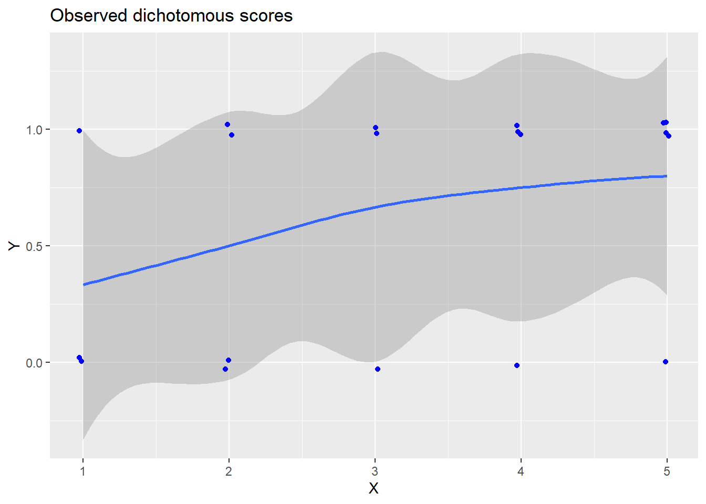
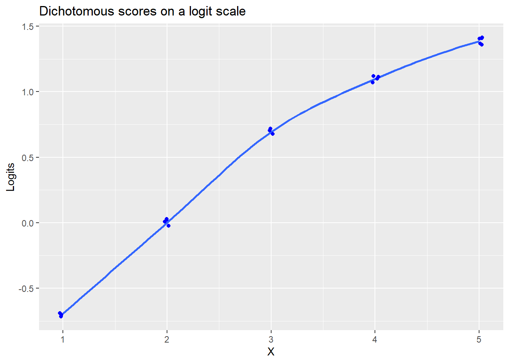
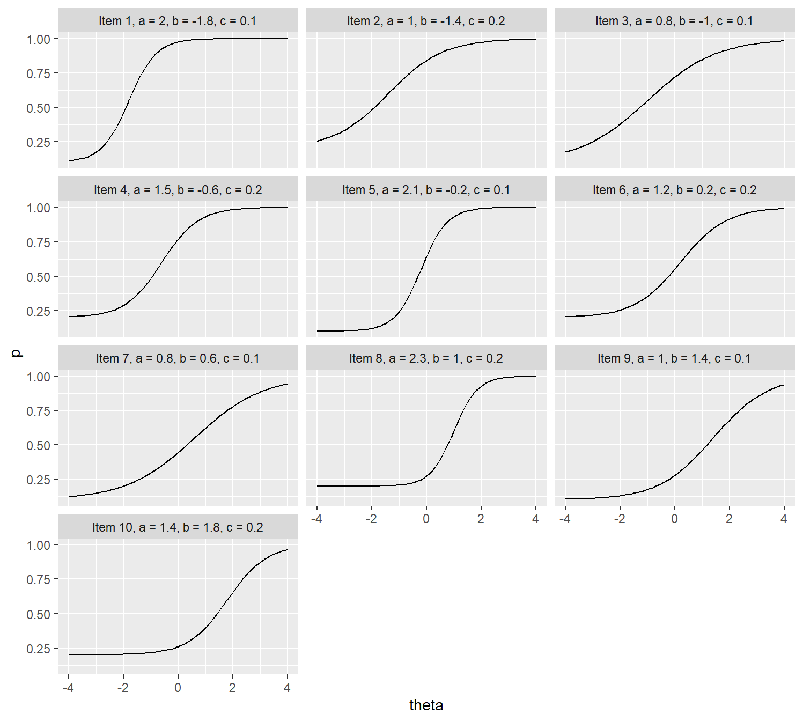
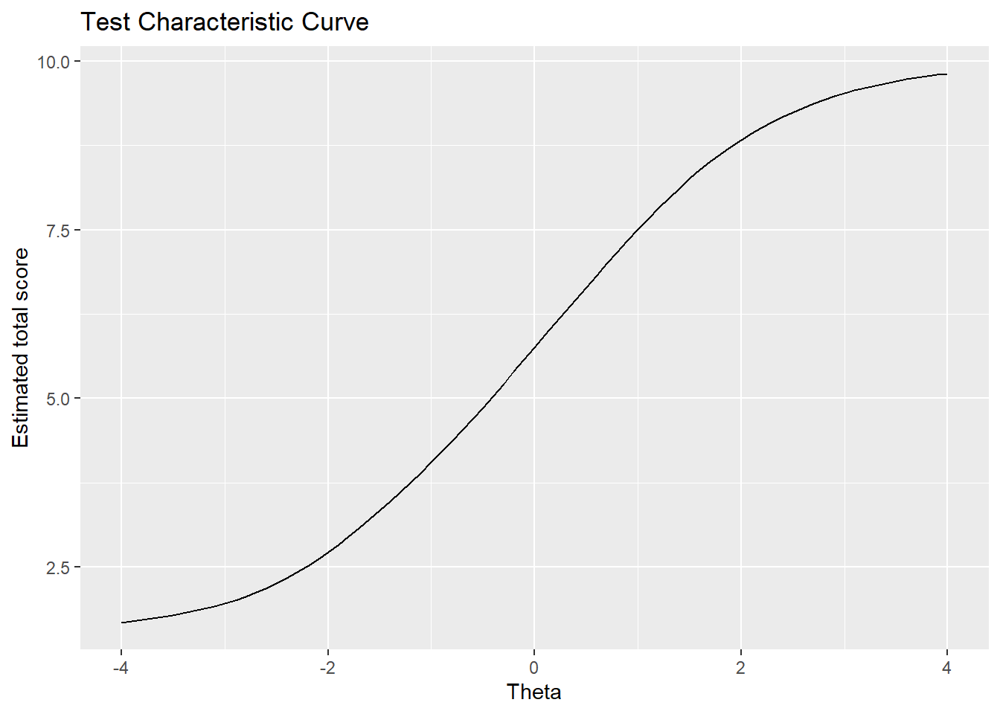
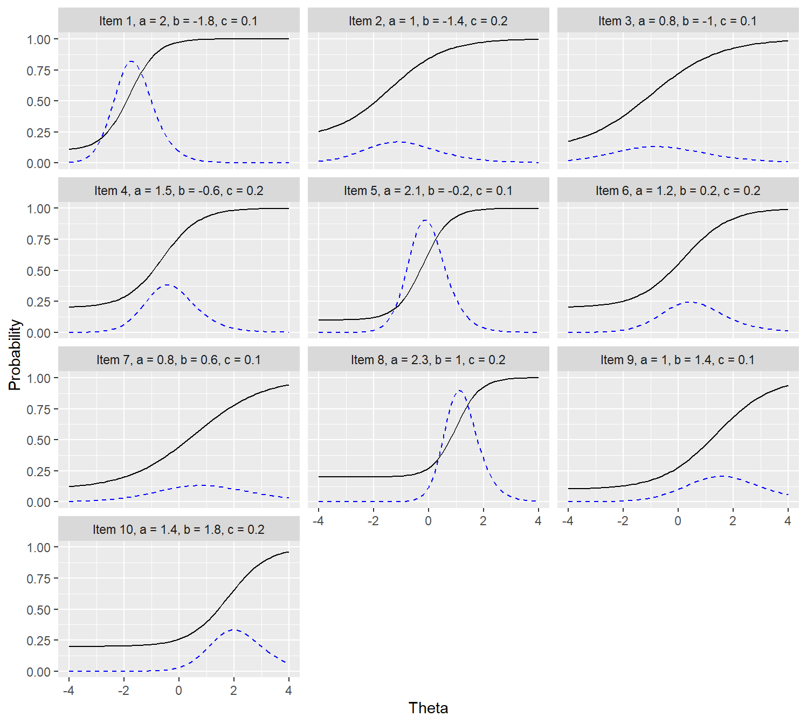
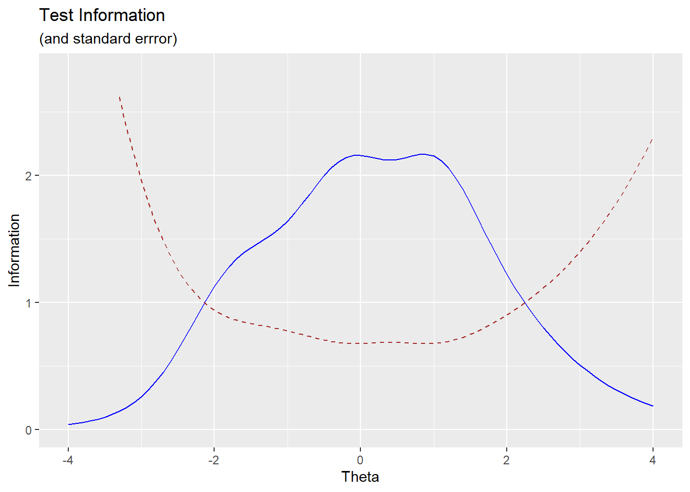

Chapter 2 Item Response Modeling
Item response theory (IRT) and Rasch modeling are used to estimate persons’ scores on tests that are made up of items that are scored as dichotomous or polytomous. Just as we saw with CFA models, a latent variable is modeled to cause the variation in the item responses. In this chapter, we will practice fitting IRT models using the ltm package [R-ltm]. We will begin with dichotomous data and then explore two models used for estimating scores from polytomous data—the graded response model (Samejima, 1969) and the partial credit model (Masters, 1982).
Before we fit these models, it is a good idea visit concepts that will help us understand IRT and Rasch modeling.
2.1 On fitting linear regression models to dichotomous data
If we have a set of outcome variables that are dichotomous, scored as \(0\) and \(1\), a linear model of some predictor (such as X or a latent variable) will be misspecified if we do not transform Y to be on a continuous scale. We violate the assumption of linearity.
Using a made-up data set, we can see the challenge in estimating a regression line when Y is dichotomous.1
X <- c(1, 1, 1, 2, 2, 2, 2, 3, 3, 3, 4, 4, 4, 4, 5, 5, 5, 5, 5)
Y <- c(0, 1, 0, 0, 1, 1, 0, 0, 1, 1, 1, 1, 1, 0, 0, 1, 1, 1, 1)
ID <- 1:length(X)
samp <- data.frame(ID, X, Y)
library(ggplot2)
ggplot(samp, aes(x = X, y = Y)) +
geom_smooth() +
geom_jitter(height = .03, width = .03, color = "blue") +
labs(title="Observed dichotomous scores")
We see that the error band around the prediction line—from the geom_smooth() function—is pretty big. Because Y is a binary dependent variable, we cannot reasonably fit a regular regression model to the data. Instead, we need to transform the outcome variable to an interval-like scale, especially one that has no upper or lower bound. Our new scale will be in log-odds units, or as some people call them, logits. To show how this works, we can begin by estimating the probability that Y = 1, given the value of X. In other words, we calculate the conditional probability, \(P(Y = 1 | X)\).
One way to do this in R is to use dplyr’s group_by() function, followed by a mutate() function. If we use group_by(X), we are grouping the data into subsets based on their values in column X. In our data, X has 5 unique values, so there will be 5 subsets of data. Then, we can calculate the mean value on Y within each subset and assign it to a new column, which we’ll call cond_p, for conditional probability.
library(dplyr)
samp <- samp %>% group_by(X) %>%
mutate(cond_p = mean(Y))
samp %>% distinct(X, cond_p) %>% round(2) # Displaying the conditional p per value of X.| \(X\) | \(P(Y = 1 | X)\) |
|---|---|
| 1 | .33 |
| 2 | .50 |
| 3 | .67 |
| 4 | .75 |
| 5 | .80 |
Probabilities are bound between \(0\) and \(1\). If we transform probabilities into odds, using \(\frac{P}{1-P}\) , the upper boundary is no longer \(1\) but is freed to be infinity. However, the lower bound is still zero. We can transform the odds into logits, using \(ln\left(\frac{P}{1-P}\right)\). This frees the lower bound, making the possible range from \(-\infty\) to \(\infty\).
| \(X\) | \(P(Y = 1 | X)\) | \(Odds\) | \(Logits\) |
|---|---|---|---|
| 1 | .33 | 0.5 | -0.69 |
| 2 | .50 | 1.0 | 0.00 |
| 3 | .67 | 2.0 | 0.69 |
| 4 | .75 | 3.0 | 1.10 |
| 5 | .80 | 4.0 | 1.39 |
Notice that when the probability is .50, the odds value is 1.00 and the logit is 0. Logits can be negative or positive, depending on whether the probability is above or below .50. Now we can use Logits as the dependent variable. If we plot our data, we can see that we can see that the Y axis is no longer categorical and that we can assume there is some degree of linearity between the predictor and the outcome variables.
library(ggplot2)
ggplot(samp, aes(x = X, y = Logits)) +
geom_smooth() +
geom_jitter(height = .03, width = .03, color = "blue") +
labs(title="Dichotomous scores on a logit scale")
We can recover the probabilities from the logit scores using the exp() function to calculate \(\frac{e^{logits}}{1+e^{logits}}\).
| \(X\) | \(P(Y = 1 | X)\) | \(Odds\) | \(Logits\) | \(\frac{e^{logits}}{1+e^{logits}}\) |
|---|---|---|---|---|
| 1 | .33 | 0.5 | -0.69 | .33 |
| 2 | .50 | 1.0 | 0.00 | .50 |
| 3 | .67 | 2.0 | 0.69 | .67 |
| 4 | .75 | 3.0 | 1.10 | .75 |
| 5 | .80 | 4.0 | 1.39 | .80 |
 A note on \(e\) and the natural log. The mathematical constant \(e\) has a value of approximately 2.71828. In R, we can use the exponential function, A note on \(e\) and the natural log. The mathematical constant \(e\) has a value of approximately 2.71828. In R, we can use the exponential function, exp(1), to get this number. If we apply the exp() function on another number, such as \(2\), the result will be 2.71828 to the power of that number. For example, \(\text{exp}(2) = 2.71828^{2} = 7.3890561\). If we have an exponentiated value and seek to get back to the original value, we can use the natural log. In R, the log() function uses base \(e\) as the default, making it the natural log.2 So, with our example with the number \(2\), \(\text{log(}7.3890561\text{)} = 2\). |
This transformation of a dichotomous outcome variable into log-odds units is pretty much what logistic regression does with this equation:3 \[ln\left(\frac{p}{1-p}\right) = b_0+b_1X\] We can also obtain the predicted probability of Y = 1 given the values of X from the linear equation we used with logits: \[P(Y = 1|X) = \frac{e^{(b_0+b_1X)}}{1+e^{(b_0+b_1X)}}\]
2.2 Logistic item response models with dichotomous data
The three fundamental logistic models in the IRT tradition for scoring dichotomous data are the one-parameter logistic (1PL), two-parameter logistic (2PL), and three-parameter logistic (3PL) models. In the Rasch tradition, a single model, the Rasch model, is applied to dichotomous data.
The Rasch model and one-parameter logistic (1PL) model use the same logistic function, but Georg Rasch developed his measurement model directly using logistic functions, whereas the logistic IRT models were developed to find a computationally easier alternative to the normal ogive IRT model.4
2.2.1 The Rasch and 1PL models
The 1PL and Rasch models provide a good starting point for understanding item parameters. We can think of them as latent logistic regression analyses, where item responses are predicted by the difference between two numbers: persons’ levels on the latent trait \((\theta)\) and the item’s difficulty estimate (represented by the \(b\) parameter). The \(\theta\) variable and the \(b\) parameter are logits and are on the same scale. Because theta can vary across persons, the subscript of theta, such as \(j\), refers to the person. The subscript of \(b\), such as \(i\), refers to the item.
With the Rasch model, the probability that a person \(j\), with an ability of \(\theta\) scores a 1 (rather than 0) on Item \(i\), given the difficulty of the item estimated by the \(b\) parameter, is calculated using this equation:
\(P(X = 1|\theta_j, b_i) = \frac{e^{\theta_j - b_i}}{1+e^{\theta_j - b_i}}\)
With the 1PL model, the same equation applies, but there is also a discrimination parameter \((a)\) that is fixed to be the same across the items. The \(a\) parameter is analogous to the pattern coefficients in a confirmatory factor analysis (CFA) model. If the 1PL model were estimated using categorical CFA, we would fix all of the pattern coefficients to be equal, as they are in an essentially tau-equivalent model. The 1PL equation is this:
\(P(X = 1|\theta_j, b_i) = \frac{e^{a(\theta_j - b_i)}}{1+e^{a(\theta_j - b_i)}} \text{,}\)
Notice that the \(a\) parameter is not subscripted, as it is the same across all of the items. If the Rasch model is used, \(a\) is not estimated, but is set to 1.
2.2.2 The 2PL model
In the 2PL model, we estimate the discrimination parameter for each item. The equation to estimate persons’ probabilities of providing a correct response given their ability level \((\theta_j)\), the item difficulty \((b_i)\), and item discrimination \((a_i)\), is this: \[P(X = 1|\theta_j, b_i, a_i) = \frac{e^{a_i(\theta_j - b_i)}}{1+e^{a_i(\theta_j - b_i)}}\]
2.2.3 The 3PL model
The 3PL model includes the 2PL model with an additional guessing parameter \((c)\). The probability that person \(j\), having an ability of \(\theta_j\), will score a 1 (rather than 0) on Item \(i\), given the item’s difficulty \((b_i)\), discrimination \((a_i)\), and guessing \((c_i)\) parameters, is
\(P(X = 1|\theta_j, b_i, a_i, c_i) = c_i+(1-c_i)\frac{e^{a_i(\theta_j - b_i)}}{1+e^{a_i(\theta_j - b_i)}} \text{.}\)
The guessing parameter adds a lower asymptote, which means the probability can only go as low as \(c_i\) regardless of how low an estimated \(\theta\) is. We can then think of this as fitting the 2PL model based on what is leftover after account for guessing (i.e., \(1 – c_i\)). For instance, if the model estimated \(c_i\) to be .25 on the 0-to-1 probability scale, the 2PL model then estimates the probability of correctly responding, which is somewhere between .25 and 1.00, after accounting for this guessing.
2.2.4 Item response functions
These Rasch and IRT equations are item response functions (IRFs). IRFs are also called item characteristic curves (ICCs). We can plot an item’s IRF across a range of \(\theta\)s to see how the item is modeled to function at different levels of person ability.
Most IRT software prints IRFs, but not always. If we need to, we can use the item parameters from the IRT output and generate our own plots. Often, we estimate item parameters, which we will do later. However, sometimes authors publish them, permitting us to analyze the items’ functioning. Let’s use the item parameters presented in Table 14.1 of Bandalos [cite Bandalos]. These are a 3PL model.
abc<- matrix(
c( 1, 2.0, -1.8, 0.1,
2, 1.0, -1.4, 0.2,
3, 0.8, -1.0, 0.1,
4, 1.5, -0.6, 0.2,
5, 2.1, -0.2, 0.1,
6, 1.2, 0.2, 0.2,
7, 0.8, 0.6, 0.1,
8, 2.3, 1.0, 0.2,
9, 1.0, 1.4, 0.1,
10, 1.4, 1.8, 0.2),
ncol = 4, byrow = TRUE)
colnames(abc) <- c("Item", "a", "b", "c")
Itemabc <- data.frame(abc)
Itemabc| Item | a | b | c |
|---|---|---|---|
| 1 | 2.0 | -1.8 | 0.1 |
| 2 | 1.0 | -1.4 | 0.2 |
| 3 | 0.8 | -1.0 | 0.1 |
| 4 | 1.5 | -0.6 | 0.2 |
| 5 | 2.1 | -0.2 | 0.1 |
| 6 | 1.2 | 0.2 | 0.2 |
| 7 | 0.8 | 0.6 | 0.1 |
| 8 | 2.3 | 1.0 | 0.2 |
| 9 | 1.0 | 1.4 | 0.1 |
| 10 | 1.4 | 1.8 | 0.2 |
We can plot the probability of getting the item correct for each theta level using the ggplot2 package. Some packages provide these plots for us, and we will use them. Using ggplot gives us freedom in how we format our plots, which we might prefer when we prepare our work for publication.
2.2.4.1 Creating the data frame for plotting the IRFs
To generate ggplots of IRFs, we have to create a data frame that has a long format. In this data frame, each item will have a range of theta values, let’s say from -4 to +4. This means there will be many rows of data for that particular item. Then, for each theta value, we will calculate the probability, using the item response function. Let’s plot all the items’ ICCs on a single facet plot.
First, let’s create a set of theta values, from -4 to 4 by increments of 0.10. We can use the sequence function, seq(), do this this.
## [1] 81We see that we created a vector that has 81 values. Next, we can plug these values into a data frame with our item parameters.
There’s a function in tidyverse’s dplyr package called slice() that lets us select rows. This is similar to filter(), which we used before, but with slice() we can use the row number in the indexing. For example, if we use slice(Itemabc, c(1,3)), we get Rows 1 and 3. We can also use this to duplicate the rows. For instance, if we use slice(Itemabc, c(3,3)), we will get 2 rows that are copies of Row 3 in our original Itemabc data. We can use this in combination with the replicate function, rep(). The rep() function has an each = argument. This replicates each row the number of times we specify before it goes to the next number. For example, slice(Itemabc, rep(3:4, each = 2)) repeats Rows 3 and 4 two times.5
## Item a b c
## 1 1 2.0 -1.8 0.1
## 2 3 0.8 -1.0 0.1## Item a b c
## 1 3 0.8 -1 0.1
## 2 3 0.8 -1 0.1The following code returns Rows 3 and 4, each having two replicates. We will use this type of code to create our long data frame. When we do that, the length of our replicates will be the number of values in our theta object that we just created because we will use each = length(theta) as the argument.
## Item a b c
## 1 3 0.8 -1.0 0.1
## 2 3 0.8 -1.0 0.1
## 3 4 1.5 -0.6 0.2
## 4 4 1.5 -0.6 0.2library(dplyr)
icc_dat <- Itemabc %>%
slice(rep(1:nrow(Itemabc), each = length(theta)))
str(icc_dat)## 'data.frame': 810 obs. of 4 variables:
## $ Item: num 1 1 1 1 1 1 1 1 1 1 ...
## $ a : num 2 2 2 2 2 2 2 2 2 2 ...
## $ b : num -1.8 -1.8 -1.8 -1.8 -1.8 -1.8 -1.8 -1.8 -1.8 -1.8 ...
## $ c : num 0.1 0.1 0.1 0.1 0.1 0.1 0.1 0.1 0.1 0.1 ...Now, let’s add new columns to the data. We use dplyr’s mutate() function for this. We’ll create a column called theta, which will include the values from our theta object, replicated across each item. For this we use the times = argument so it gets repeated for the number of items we have in our Itemabc data frame.
Now we get to the whole point of this: We estimate the probability of getting a correct response using the item response function. For the 3PL model, this is p = c + (1-c)*exp(a*(theta - b)) / (1 + exp(a*(theta - b)) ).
The last two lines are for making our plot nice. Here, we include another column, Item_params for the plot label. This is optional, but we can use it to display the item parameters when we print the plot. In the last line, we specify this column to be a factor, with the levels being in the order of the items. This will make the plots be presented in the order of the items rather than in alpha-numeric order.
library(dplyr)
icc_dat <- Itemabc %>%
slice(rep(1:nrow(Itemabc), each = length(theta))) %>%
mutate(theta = rep(theta, times = length(Itemabc$Item)),
p = c + (1-c)*exp(a*(theta - b)) / (1 + exp(a*(theta - b)) ),
Item_params = paste0("Item ",Item,", a = ",a,", b = ",b,", c = ",c))
icc_dat$Item_params <- factor(icc_dat$Item_params,
levels = unique(icc_dat$Item_params) )
str(icc_dat)| Item | a | b | c | theta | p | Item_params |
|---|---|---|---|---|---|---|
| 1 | 2 | -1.8 | 0.1 | -4.0 | 0.1109156 | Item 1, a = 2, b = -1.8, c = 0.1 |
| 1 | 2 | -1.8 | 0.1 | -3.9 | 0.1132966 | Item 1, a = 2, b = -1.8, c = 0.1 |
| 1 | 2 | -1.8 | 0.1 | -3.8 | 0.1161876 | Item 1, a = 2, b = -1.8, c = 0.1 |
| 1 | 2 | -1.8 | 0.1 | -3.7 | 0.1196931 | Item 1, a = 2, b = -1.8, c = 0.1 |
| 1 | 2 | -1.8 | 0.1 | -3.6 | 0.1239373 | Item 1, a = 2, b = -1.8, c = 0.1 |
| 1 | 2 | -1.8 | 0.1 | -3.5 | 0.1290659 | Item 1, a = 2, b = -1.8, c = 0.1 |
Now we can generate a facet plot.
library(ggplot2)
library(gridExtra)
ICCs <- ggplot(icc_dat, aes(x = theta, y = p, group = Item)) +
geom_line()
ICCs + facet_wrap(. ~ Item_params, nrow = 4 )
2.2.5 Test characteristic curve
With a test having dichotomously scored items, a person’s expected raw score can be calculated as the sum of the \(P(X_i)\), given \(\theta\) of that person and any of the item’s parameters. For the 3PL model, the expected raw score of Person \(j\) on the test is
\[\sum P(X = 1 | \theta_j, b_i, a_i, c_i) \text{.}\]
The possible range of expected raw scores is from \(0\) to the number of items. We can generate a test characteristic curve (TCC) across a range of thetas in the same way as the ICC is drawn. Using the dplyr package’s group_by() function, we can group the data by the theta score, then add up all the values in the column in our data that include the probability (i.e, p in our data). We use the summarize() function for this, with the sum(p).6
library(dplyr)
TCCs <- icc_dat %>%
group_by(theta) %>%
summarize(Est_score = sum(p), .groups = 'drop')library(ggplot2)
ggplot(TCCs, aes(x = theta, y = Est_score)) +
geom_line() +
xlab("Theta") + ylab("Estimated total score") +
labs(title = "Test Characteristic Curve")
The test characteristic curve shows the connection between the latent-trait scores and the observed scores on the test. In other words, we can translate IRT scores back to the scale of the test. If we need to communicate to other people what a latent trait score is, we can use this function.
2.2.6 Information and standard error
2.2.6.1 Item information
Item information functions are valuable for locating where on the theta scale our item is most sensitive and therefore better equipped for distinguishing examinees. For example, if we have a very easy item, it will be better at distinguishing among examinees at the lower end of the latent trait scale than it will at distinguishing among examinees at higher end. If we hypothesize, based on our guiding subject-matter theory, that an item is difficult at a particular range on the latent=variable scale, we can examine if indeed the item provides information at that range.
With a 3PL model, we can calculate the information function using the equation in Baker (Baker, 2001):7
\[I_{i|(\theta)} = a^2_i\frac{Q_{i|(\theta)}}{P_{i|(\theta)}}\frac{(P_{i|(\theta)} - c_i)^2}{(1 - c_i)^2}\] where \(P_{i|(\theta)}\) is the probability of getting item \(i\) correct at a given a level on the latent-trait (\(\theta\)), and \(q_{i|(\theta)} = 1 - p_{i|(\theta)}\).
With a 2PL model, \(c_i = 0\), which reduces the equation to
\[I_{i|(\theta)} = a^2_iP_{i|(\theta)}Q_{i|(\theta)} \text{.}\]
When the \(a\) parameter is set to 1, such as with the Rasch model, the information function is \[I_{i(\theta)} = P_{i|(\theta)}Q_{i|(\theta)} \text{.}\] If we recall back to our chapter on variance and covariance, this equation is analogous to the variance of a dichotomous variable, \(pq\). In item-response modeling, we have taken this one step further and estimated the variance at the location of theta.
2.2.6.2 Test information
At any given level of \(\theta\), the information from individual items accumulates. If we intend to use the test scores to make decisions or distinguish among examinees around a particular cut score, such as for identifying who needs further assistance, or for identifying who has sufficient knowledge for licensure, we should examine the precision of our scores at that level. The test information curve, which is the sum of the item information curves, serves this purpose.
\[I_{(\theta)} = \sum I_{i|(\theta)}\]
2.2.6.3 The standard error of measurement
The error variance at a given level of theta is the inverse of the test information function: \[ErrorVar_{(\theta)} = \frac{1}{I_{(\theta)}}\]
The standard error of measurement is the square root of this: \[SE_{(\theta)} = \frac{1}{\sqrt{I_{(\theta)}}}\]
2.2.7 Plotting information and the standard error of measurement
Because we know the item parameters and the probability across a range of thetas, We can include the item information functions in our data frame and plot them.
library(dplyr)
icc_dat <- Itemabc %>%
slice(rep(1:nrow(Itemabc), each = length(theta))) %>%
mutate(theta = rep(theta, times = length(Itemabc$Item)),
p = c + (1-c)*exp(a*(theta - b)) / (1 + exp(a*(theta - b)) ),
q = (1-p),
information = a^2*(q/p)*((p - c)^2)/((1-c)^2),
Item_params = paste0("Item ",Item,", a = ",a,", b = ",b,", c = ",c))
icc_dat$Item_params <- factor(icc_dat$Item_params,
levels = unique(icc_dat$Item_params) )
# str(icc_dat)We can use the same ggplot() and facet_wrap() functions as before and add a new geom_line() for the information, geom_line(aes(y = information)). This adds a new line that plots the X axis already in place (theta) with the new variable (information), which is on the same scale as the conditional probability estimates on the Y axis. We can change its color and line type to distinguish it from the item response curves.
library(ggplot2)
library(gridExtra)
ICCs <- ggplot(icc_dat, aes(x = theta, y = p, group = Item)) +
geom_line() +
xlab("Theta") + ylab("Probability") +
geom_line(aes(y = information), color = "blue", linetype = "dashed")
ICCs + facet_wrap(. ~ Item_params, nrow = 4)
With the 2PL and 3PL models, low discrimination parameter values can result in platykurtic information functions. High discriminations yield leptokurtic information, making them very sensitive at some regions of theta and very insensitive at others. Because Rasch models do not use the discrimination parameter (effectively fix \(a\) to 1), item information functions are mesokurtic and always peak at \(p = .25\), where \(P_{i|(\theta)} = .50\)
For the test information, we can sum the items’ information functions at each theta, then plot the result to acquire the test information function. We can also plot the standard error.
library(dplyr)
Test_info <- icc_dat %>%
group_by(theta) %>%
summarize(Info = sum(information), .groups = 'drop')
Test_info$SEm <- 1/sqrt(Test_info$Info)ggplot(Test_info, aes(x = theta, y = Info)) +
geom_line(color = "blue") +
geom_line(aes(y = SEm), color = "brown", linetype = "dashed") +
ylim(c(0, 1.3*max(Test_info$Info))) +
xlab("Theta") + ylab("Information") +
labs(title = "Test Information", subtitle = "(and standard errror)")
We see that the error is much higher at the lower and upper ends of the scale, which is not surprising. We should probably avoid trying to distinguish among examinees at these locations on the theta scale, as their scores are less stable. In other words, the estimates of their level on the latent trait scale are less precise than their counterparts where the information is high.
2.3 Fitting a 1PL model
—under construction—
2.4 Checking assumptions
—under construction—
There are two assumptions with IRT and Rasch models: The assumption of unidimensionality and the assumption of local independence. These are closely related. When the assumption of unidimensionality has been met, we can safely bet that local independence has, too.
Another set of assumptions concerns the functional form of the data. In the IRT tradition, this helps analysts to determine whether to use a 1PL, 2PL, or 3PL model. In both the IRT and Rasch traditions, we examine item fit.8
2.4.1 Unidimensionality
—under construction—
One way to examine unidimensionality is to use the same procedures that are used to detect the number of factors to retain in exploratory factor analysis. That is, we can transform the data into a tetrachoric correlation matrix (or a polychoric correlation matrix, with polytomous data) and use the parallel analysis and a scree plot to determine whether a single factor model is appropriate. Most data will show some degree of multidimensionality, so may be a matter of degree that requires judgment. One additional source for evaluating the influence of a second factor is the proportion of variance explained by the first and second factors, as is typically reported in EFA. We can also examine the ratio of the first eigenvalue to the second [cite Lumsden, 1976]. If this ratio is 4 or higher, we can be more confident that the theta scores in IRT will primarily be from that first dimension.
References
Baker, F. B. (2001). The basics of item response theory (Second). ERIC Clearinghouse on Assessment; Evaluation.
Masters, G. N. (1982). A Rasch model for partial credit scoring. Psychometrika, 47(2), 149–174. https://doi.org/10.1007/BF02296272
Samejima, F. (1969). Estimation of latent ability using a response pattern of graded scores. Psychometrika Monograph No. 17. https://doi.org/10.1007/BF03372160
Here we’re using
geom_jitter()instead ofgeom_point()because otherwise, a single observation and multiple observations at the same location on the plot would look the same. With jittering, we can spread them out to get an idea of many observations are at each location on the plot.↩︎If we seek to use base 10, we can specify the argument
base = 10.↩︎Beyond this example, logistic regression estimates the standard errors differently than does regular ordinary-least-squares regression. Logistic regression also uses maximum likelihood estimation instead of the simple conditional-probability transformation we conducted.↩︎
The normal ogive models can be very closely approximated through these more convenient logistic functions by multiplying the logistic IRT \(a\) parameter by a scaling constant, \(D\), which is about \(1.7\). Rasch models do not use this constant in their parameter estimations, but 1PL, 2PL, and 3PL models sometimes do when analysts seek to approximate the normal ogive models.↩︎
Another way to do this is to use Base R’s
expand.grid()function. This returns all combinations of two variables. So if we useexpand.grid(theta, Itemabc$Item), we have a data frame that repeats all of the unique values from the objectthetafor every unique value ofItemabc$Item. We can then merge it with the Itemabc data frame usingItemas the key variable.↩︎The
.groups = 'drop'code fixes an idiosyncratic anomaly with this function, which otherwise would throw a so-called “friendly error”.↩︎In at least some copies of Baker (2001), the parentheses are missing in the primary equation but applied in the example. An equivalent equation is \(I_i(\theta) = \frac{a^2_iq_i(p_i-c_i)^2}{(1-c_i)^2p_i}\text{,}\), where \(p_i\) and \(q_i\) are at the given level of \(\theta\) as with the equations from Baker.↩︎
Item fit In the Rasch tradition, person fit is also examined.↩︎